Draw a residual plot with an object of class coxph
Usage
residualPlot(
fit,
type = "martingale",
vars = NULL,
ncol = 2,
show.point = TRUE,
se = TRUE,
topn = 5,
labelsize = 4
)Arguments
- fit
An object of class coxph or survreg
- type
character One of the c("martingale","deviance","score","schoenfeld", "dfbeta","dfbetas","scaledsch","partial"). Default value is "martingale".
- vars
character Names of variables to plot. default value is NULL
- ncol
numeric number of columns
- show.point
logical Whether or not show point
- se
logical Whether or not show se
- topn
numeric number of data to be labelled
- labelsize
numeric size of label
Examples
require(survival)
data(cancer)
fit=coxph(Surv(time,status==2)~log(bili)+age+cluster(edema),data=pbc)
residualPlot(fit)
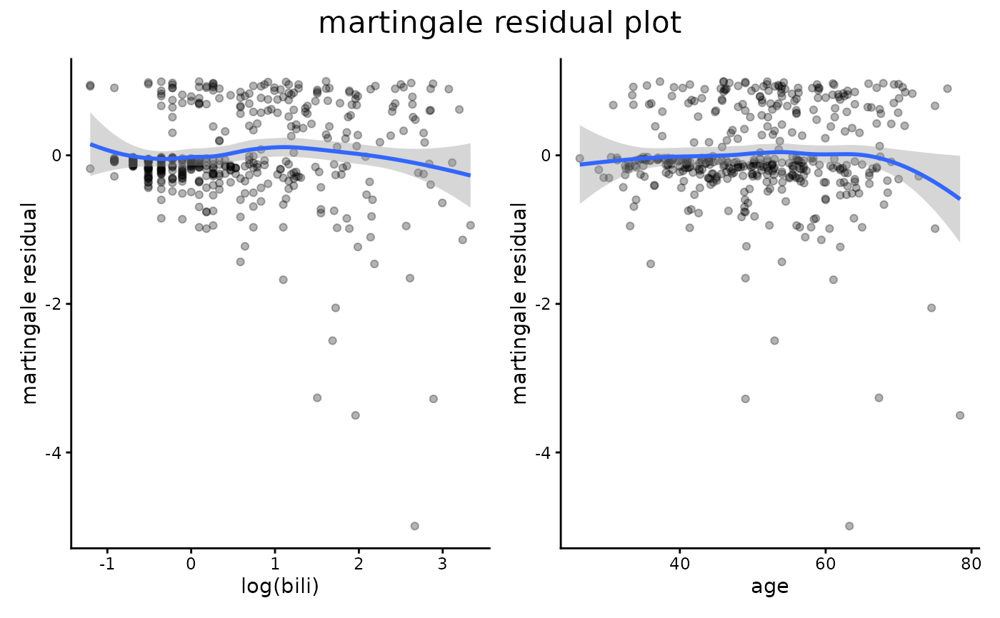
# \donttest{
residualPlot(fit,vars="age")
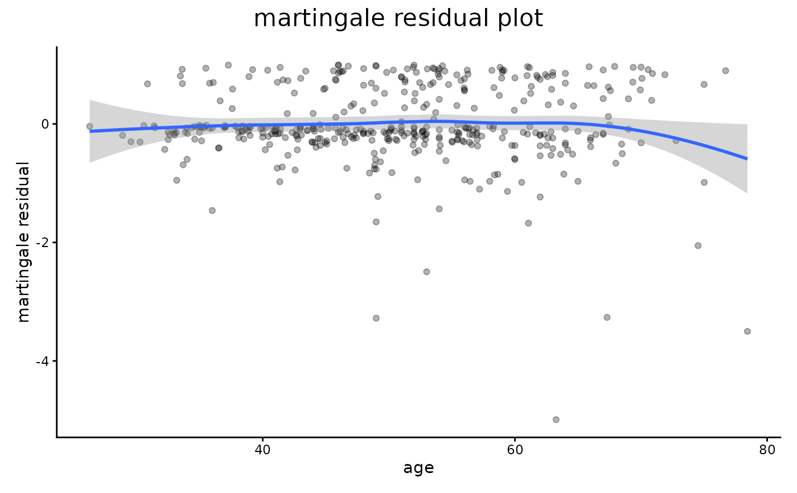
fit=coxph(Surv(time,status==2)~age,data=pbc)
residualPlot(fit)
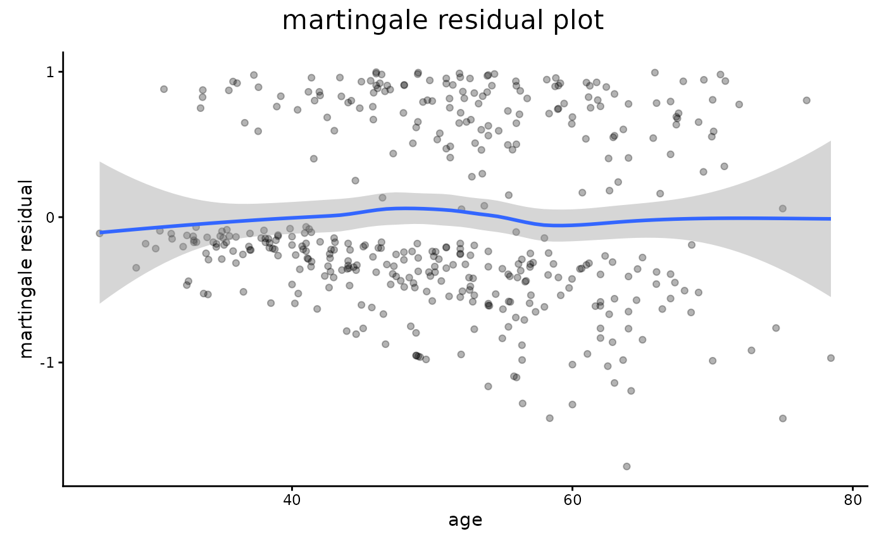
residualPlot(fit,"partial")
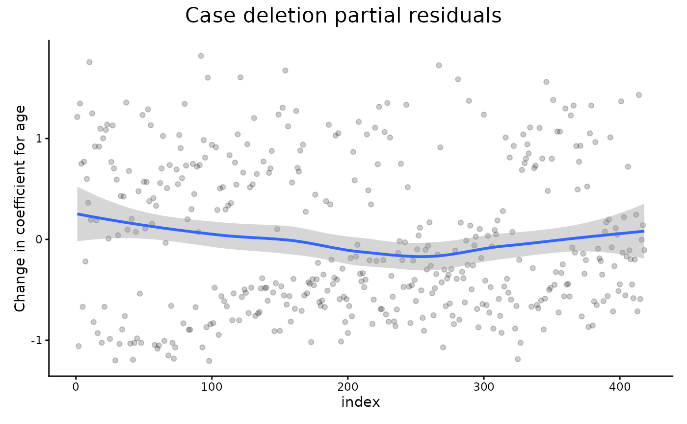
fit=coxph(Surv(time,status)~rx+sex+logWBC,data=anderson)
residualPlot(fit,ncol=3)
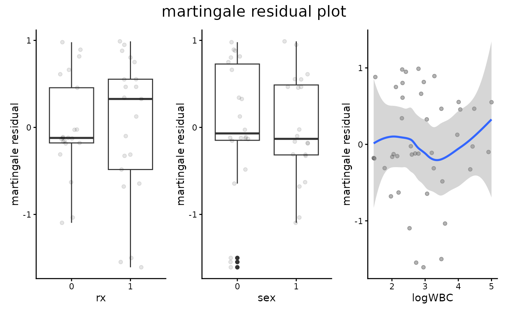
data(pharmacoSmoking,package="asaur")
fit=coxph(Surv(ttr,relapse)~grp+employment+age,data=pharmacoSmoking)
residualPlot(fit)
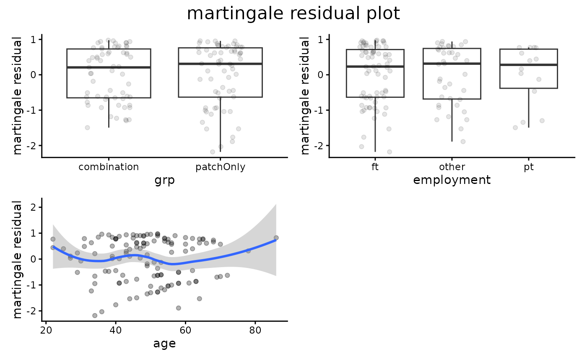
residualPlot(fit,var="age")
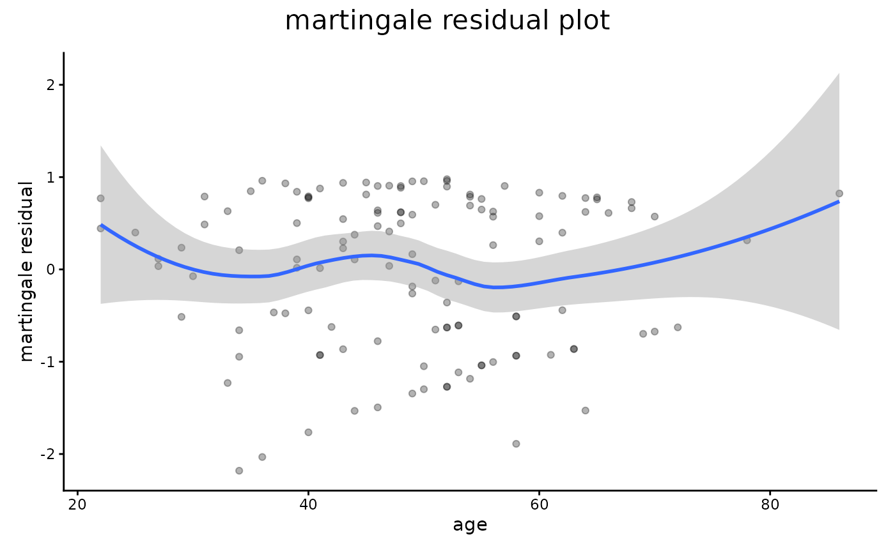
residualPlot(fit,type="dfbeta")
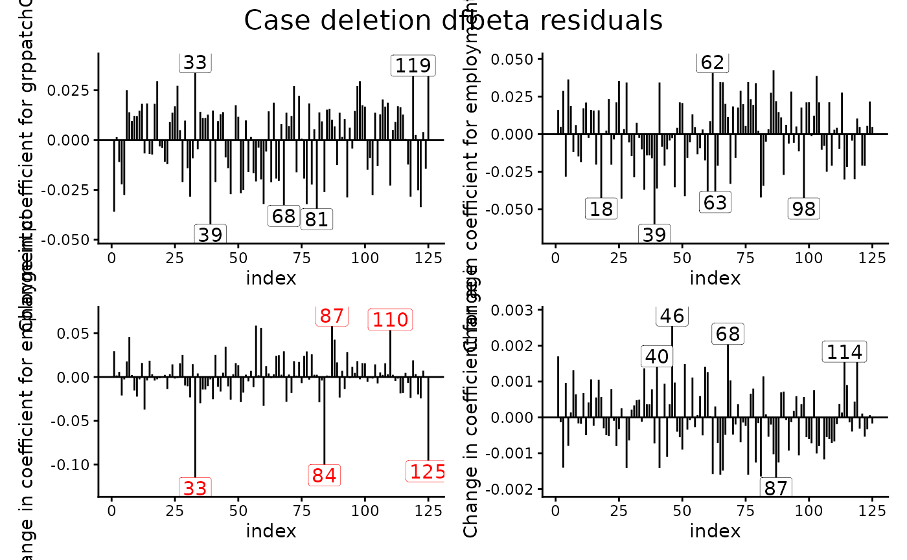
residualPlot(fit,type="dfbeta",var="age")
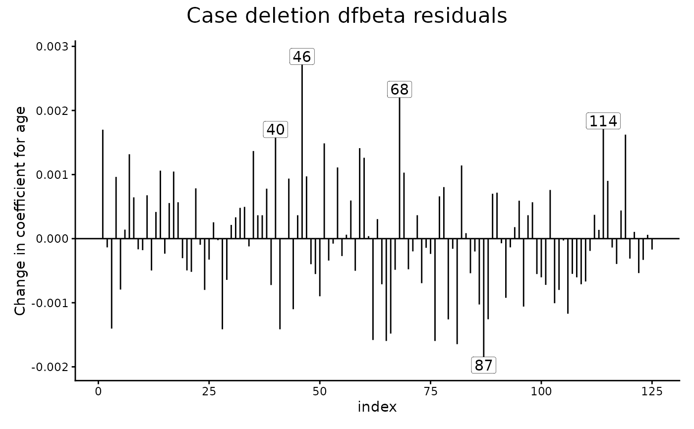
residualPlot(fit,type="dfbeta",var="employment")
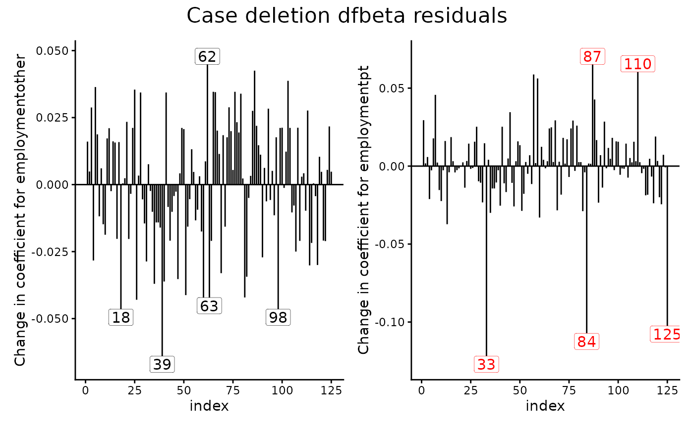
residualPlot(fit,type="dfbeta",var="employmentother")
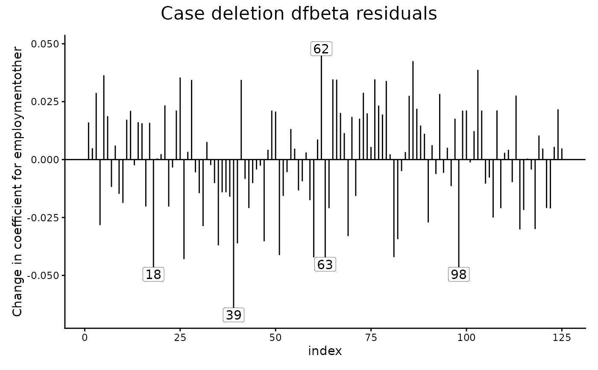
pharmacoSmoking$ttr[pharmacoSmoking$ttr==0]=0.5
fit=survreg(Surv(ttr,relapse)~grp+age+employment,data=pharmacoSmoking,dist="weibull")
residualPlot(fit,type="response")
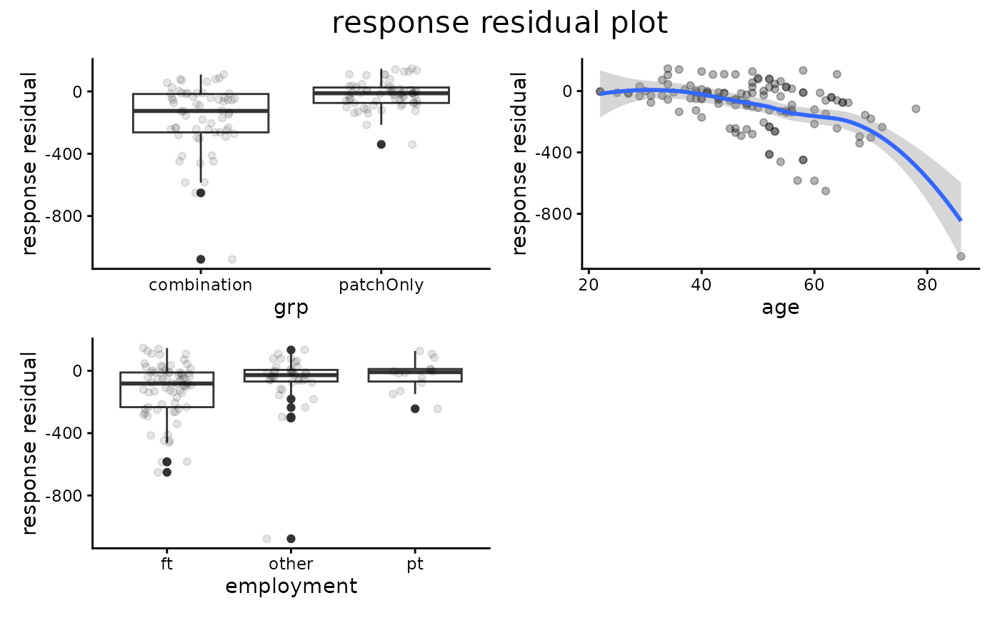
residualPlot(fit,type="deviance")
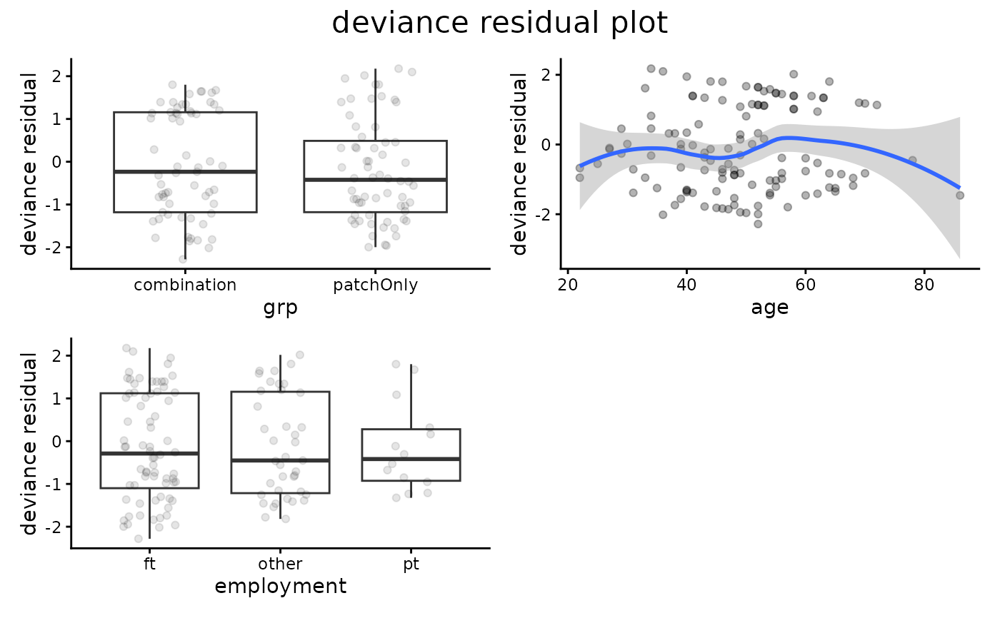
residualPlot(fit,type="dfbeta",vars="age")
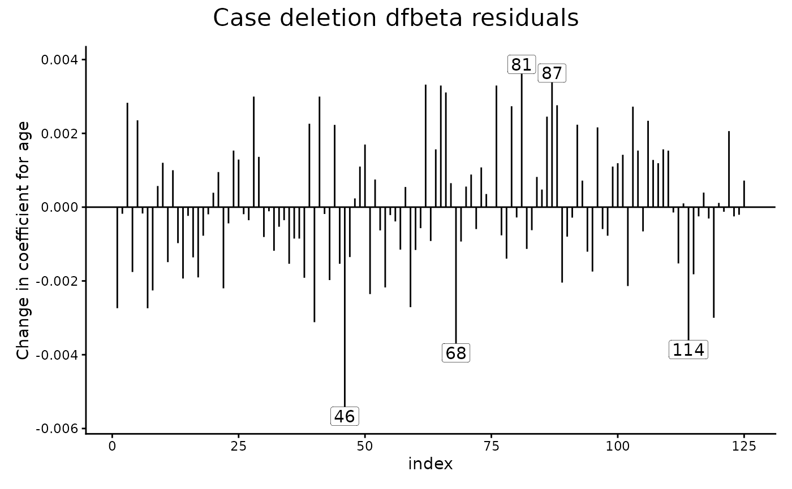
fit=survreg(Surv(time,status)~ph.ecog+sex*age,data=lung,dist="weibull")
residualPlot(fit,"dfbeta")
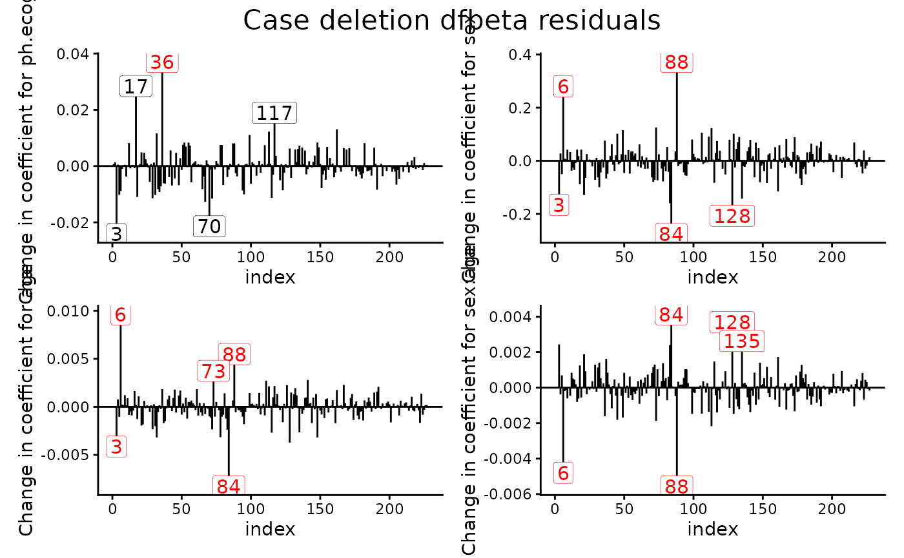
residualPlot(fit,"deviance")
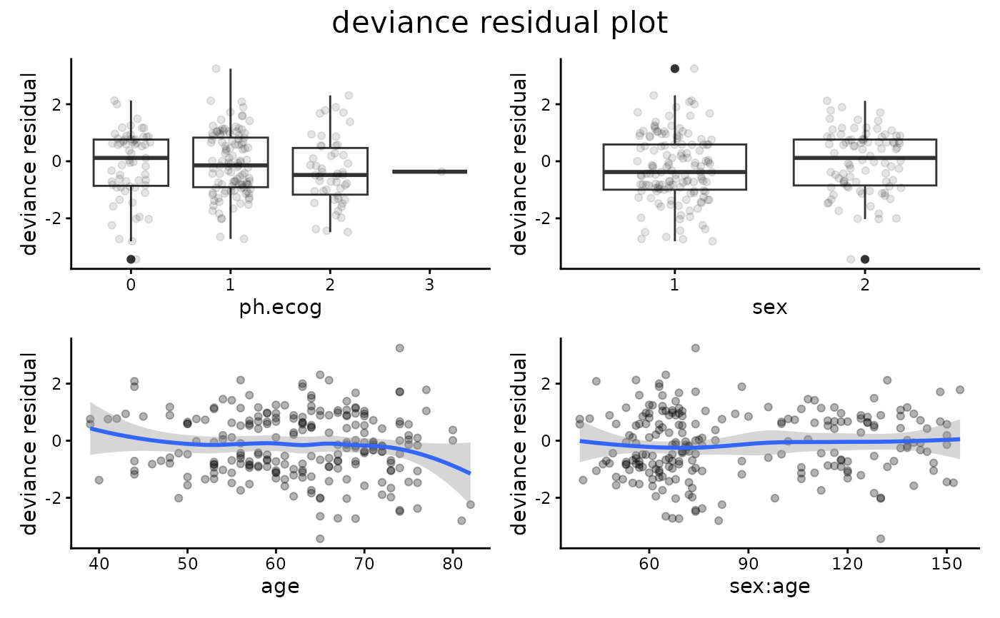
# }